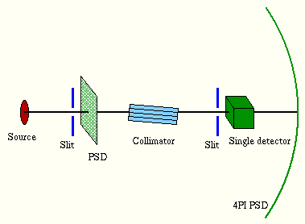
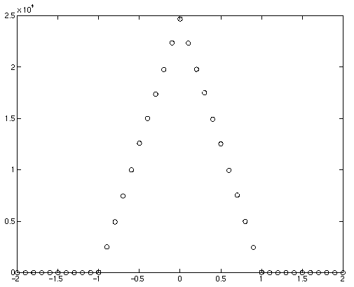
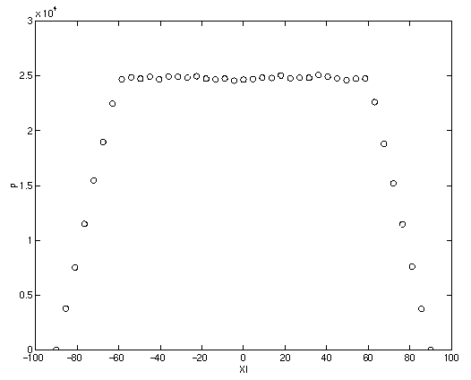
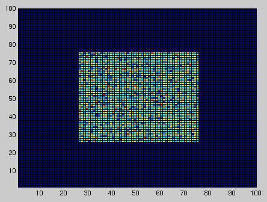
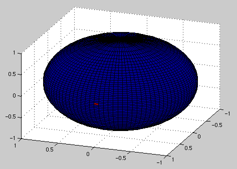

Collimator and
Slit components. The instrument setup consists of the source aimed at a slit
overlapped with a flat PSD monitor. After the
slit comes a collimator that may be rotated,
then another slit and finally a single
detector. A 4PI PSD monitor with
large radius borders the setup. The source is at a large distance to the other
components so that the neutron beam has a very small divergence.

See also the source code for the instrument definition.This graph shows a plot of the single detector as the collimator is rotated around the Y axis. It is clearly seen how the collimator permits only neutrons within the divergence of the collimator (here 1 degree) to pass through, and the triangular-shaped transmission probability function is also seen.

This graph shows a plot of the single detector as the collimator is rotated around the X axis. At 90 degrees, the collimator opening is parrallel to the beam and no neutrons can pass through. From 90 to 60 degrees a gradually larger part of the beam hits the collimator opening, and at less than 60 degrees the beam is fully within the collimator and all neutrons may pass.

This is a plot from the flat PSD that shows the absorbtion from the first slit.

This is a plot from the 4PI PSD. Only a narrow beam emerges from the instrument.
